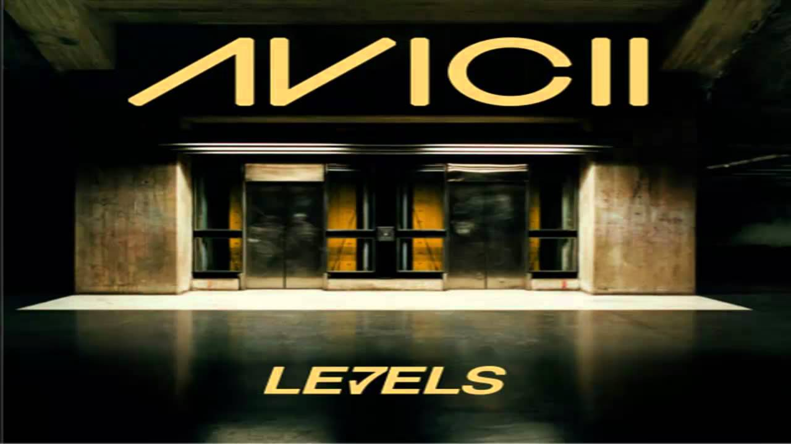

Levels" by Avicii, released in 2011, is one of the most iconic tracks in electronic dance music (EDM) history.
With its euphoric melody, intricate production, and powerful drop, the track quickly became a global sensation,
dominating charts and festivals alike. Often credited with shaping the modern EDM landscape,
"Levels" set a new standard for progressive house music and inspired a generation of artists.
Its timeless energy and unforgettable rhythm continue to resonate with fans worldwide,
solidifying Avicii’s place as a true pioneer in electronic music
Tim Bergling (8 September 1989 – 20 April 2018), known professionally as Avicii,
was a Swedish DJ, remixer, and record producer. At age 16, he began posting his remixes
on electronic music forums, which led to his first record deal. He rose to prominence
in 2011 with his single "Levels".
His debut studio album, True (2013),
blended electronic music with elements of multiple genres and received generally positive reviews.
It peaked in the top 10 in more than 15 countries and topped international charts; the lead single,
"Wake Me Up", topped most music markets in Europe and reached number four in the United States.